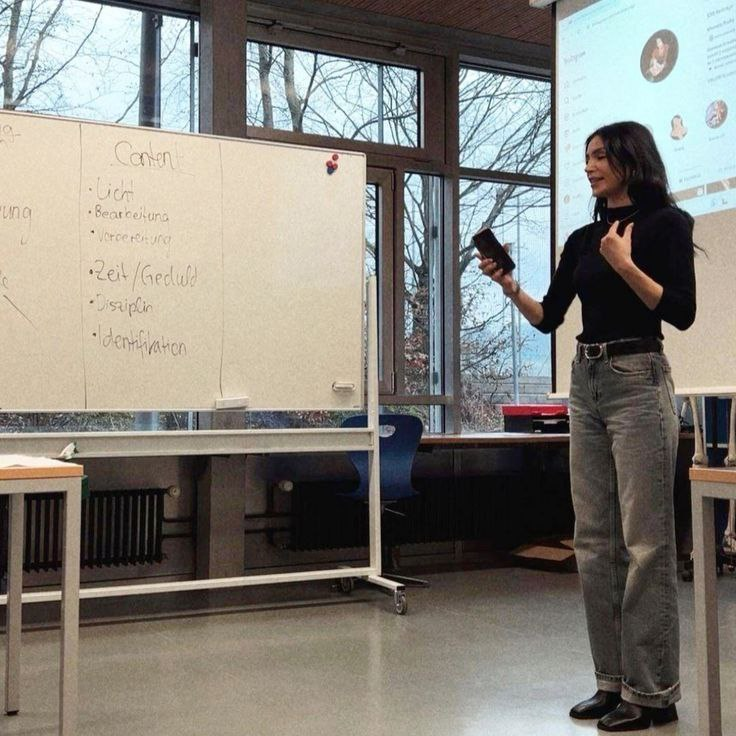

Article
📈3 формы выхода компании на международный рынок📈

📌 Компании выходят за границу не только открывая филиалы. Вот 3 основные формы:
1. Экспорт — самый простой путь. Продажа товаров за границу без физического присутствия. Минимум рисков, но и ограниченный контроль.
2. Лицензирование и франчайзинг — вы отдаёте права использовать ваш бренд или продукт. Быстрый рост, но сложнее контролировать качество.
3. Прямые инвестиции — создание дочерних компаний, заводов или офисов за рубежом. Большие вложения, но и максимальный контроль.
Каждый путь — это баланс между риском, контролем и прибылью. Грамотный выбор стратегии — ключ к устойчивому росту.
HoYoverse: How China Became Number One in the Industry
HoYoverse is a company you’ve definitely seen...
Китайский геймдев на примере HoYoverse: как Китай стал первым в индустрии
HoYoverse — компания, которую ты точно видел...
📊3 essential skills for a career in international business📊
✅️1. Cross-cultural communication — You must understand and respect different cultures, rules, and communication styles.
✅️2. English (and other languages) — Language is the foundation of trust and successful negotiation.
✅️3. Flexibility & strategic thinking — The world changes fast. You need to spot trends and adapt quickly.
📚Why should young people study international business?📚
🌏 Because the world is already connected with or without you.
Global trade, remote work, multinational companies - this is the reality.
Studying international business gives you a passport to careers that cross borders.
It teaches you how to negotiate across cultures, lead international teams, and spot business opportunities others don't even see.
In the 21st century, global mindset isn't a bonus – it's a requirement.
✨️ What is international business? ✨️
📌 International business is a global game. When companies operate beyond their home country and deal with different markets, laws, cultures, and economies - that's international business.
It's negotiations with Japan, logistics from Germany, suppliers in India, and marketing in the USA. It's not just about economics. It's about strategy, culture, and scale.
And it all starts with one mindset: the world is not a boundary - it's an opportunity.